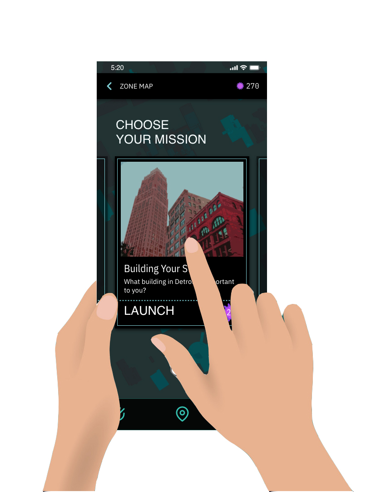
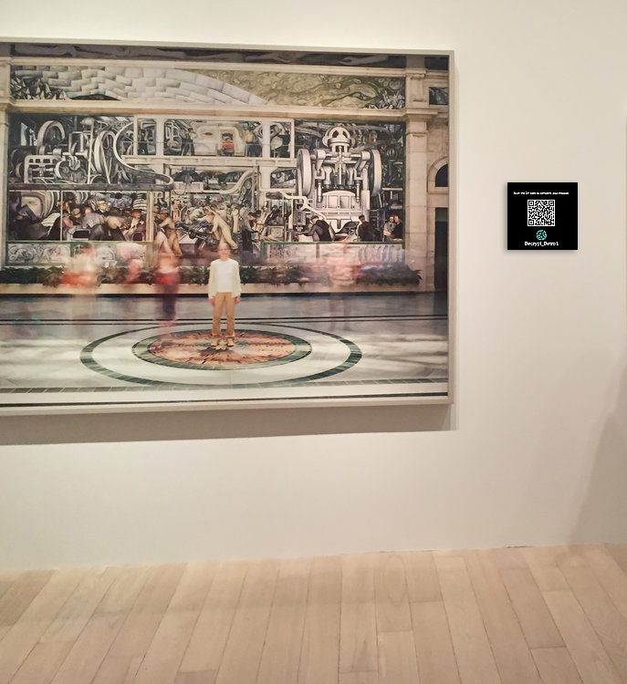
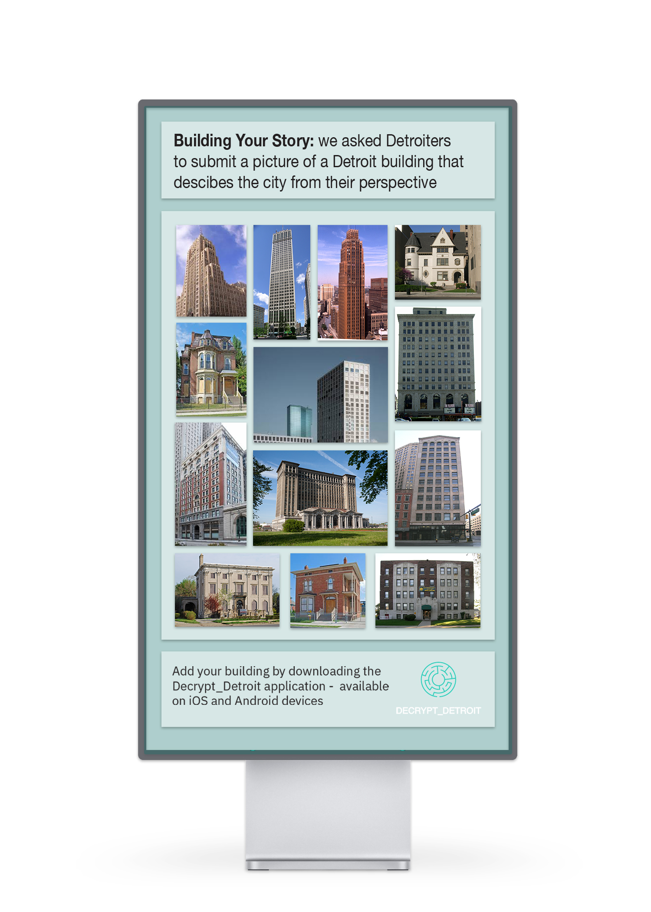

Decrypt Detroit
Detroit Design Summit
Visit Site →Needs Assessment
Through research and interviews my team identified three primary needs of
Detroit students:
1. Engaging and interactive learning experiences.
2. Connectivity to the cultural center.
3. An avenue to contribute their own ideas and creativity within the cultural center.
Vision and Solution
Our research on the cultural district, technological access, and physical transportation in Detroit and interviews with two high school teachers led to our focus on a digital experience that builds on an understanding of how students use technology to form social connections and have fun utilizing interactive technologies to engage with their community. We drew inspiration from other digital games that allow users to collaborate and be creative such as MineCraft and Fortnite.
Decrypt Detroit is a digitally-based competition spanning the cultural district. The application provides "missions" for students to complete throughout the district, challenging users to visit all of the institutions to complete scavenger hunts and create challenges unique to each location. Scavenger hunts unique to each institution will lead players through each location, and points can be earned by finding and scanning QR codes throughout the institutions.
To begin the game, players join a team with their friends or other online users and compete against different teams to complete the most missions and claim ‘zones’ marked by digital displays placed in front of each institution throughout the district. Along the way, players are invited to express their unique perspective on Detroit by sharing photos that respond to historical and cultural prompts.
These prompts invite users to share their own perspective on the city of Detroit and allow their voices to be heard and seen throughout the district. Responses to cultural prompts will be made visible on the digital displays placed outside of each institution. The game culminates in a winning team based on the points earned throughout scavenger hunts and creative challenges in each institution or ‘zone’.